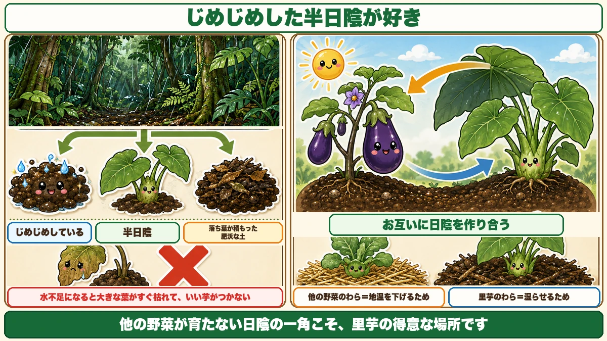
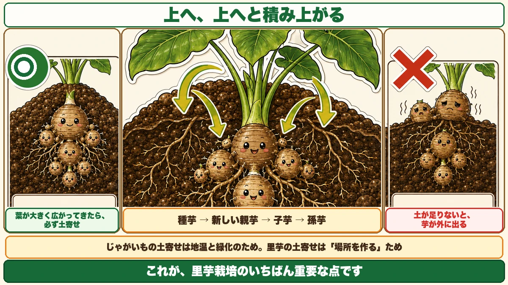
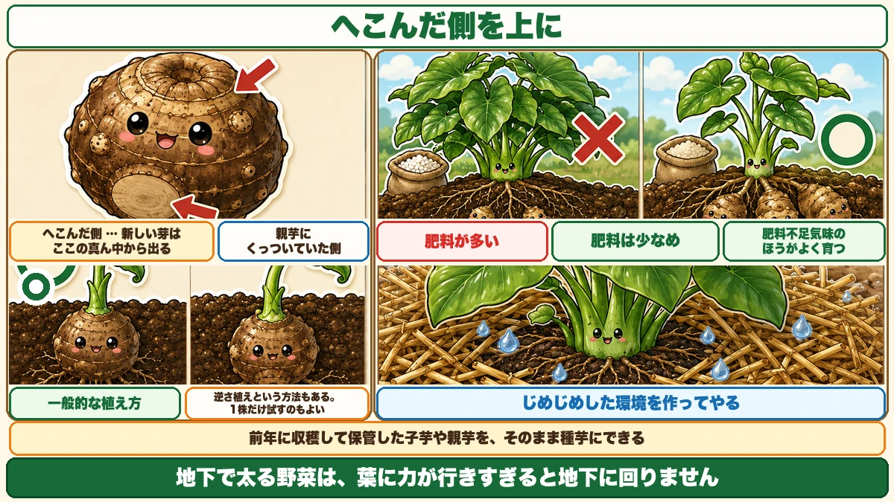

芋は種芋の「上」にできます🍠 だから土を寄せないと外に出ます

🍠「葉ばかり大きくて、芋が小さい」
🍠「掘ったら、芋が地面から出ていた」
🍠「日当たりのいい場所に植えたのに、うまくいかない」
どうも、8150（えいこう）です🌱 家庭菜園歴8年、理科の教員免許を持っていて、有機・無農薬で野菜を育てています。
里芋は、★他の野菜と好みが真逆の野菜です。
先に、この記事でいちばん言いたいことを言っておきます。
★里芋の芋は、植えた種芋の「上」にできます。
だから★土を寄せないと、芋が地面の外に出てしまいます☺️
★★まず、場所です
山の芋に対して、里の芋
名前の話から。
★山芋に対して「里の芋」。それが里芋です。
★日本だけで200種類以上の品種があると言われています。
迷ったら★土垂（どだれ）を選んでください。★いちばん有名で、作りやすく、流通しています。
★★他の野菜と、まったく違う環境を好みます
そして、いちばん大事なのがこれです。
★里芋は、他の野菜とまったく違う環境を好みます。
★じめじめした半日陰が大好きです。

★水不足になると、すぐ枯れます
逆に、苦手なこともはっきりしています。
★水不足になると、大きな葉がすぐ枯れます。
そして★いい芋がつきません。
前にレタスの記事で「乾燥に強く湿気に弱い」とお伝えしました。★里芋はその正反対です。
★★理由は、生まれ故郷です
なぜそうなのか。原産地を見ると分かります。
★里芋は、東南アジアの雨の多い熱帯雨林生まれです。
熱帯雨林とは、どんな場所でしょうか。
- ★雨がたくさん降る
- ★木が茂っていて、地面は半日陰
- ★★落ち葉が積もって腐葉土になり、肥沃で湿っている
★里芋は、そういう場所で育ってきました。
★同じような環境を作ってやれば、簡単に作れます。
★★ナスと、日陰を作り合う
面白い組み合わせがあります
場所の話で、ひとつ面白い方法があります。
★里芋とナスは、生まれ故郷が近いんです。
でも★ナスほど日を好みません。
★向きを変えて、隣に植える
そこで、こうします。
- ★ナスを、日なた側に植える
- ★里芋を、日陰側に植える
すると★ナスの影で里芋が育ちます。
そして面白いことに、★ナスも半日陰を嫌わないので、★里芋の大きな葉の影でナスを育てるという組み方もできます。
★お互いに日陰を作り合う。
前にコンパニオンプランツの記事で、根粒菌の話をしました。★あれは地下の話でしたが、★これは地上の話です。
★組み合わせは、根だけの問題ではありません。
★敷きわらで、じめじめを作る
もうひとつ、環境を作る方法があります。
★刈った草やわらを、株の周りに敷き詰めてください。
★じめじめした状態を作ってやると、すごくよく育ちます。
前に猛暑対策の記事で、★マルチの上にわらを敷く話をしました。
★同じ道具ですが、目的が違います。
- 他の野菜 … ★地温を下げるため
- ★里芋 … ★湿らせるため
★何のためにやるのかで、同じ作業の意味が変わります。
★肥料は、少なめに
入れすぎると、葉ばかりになります
肥料の話です。
★肥料をたくさん入れると、大きな葉ばかり茂ります。
見た目は立派です。でも★芋が大きくなりません。
★肥料不足気味のほうが、よく育ちます
はっきりしています。
★肥料不足気味のところのほうが、よく育ちます。
前にさつまいものつるぼけの話をしました。★玉ねぎの止め肥でも、窒素が多いと球が太らないとお伝えしました。
★地下で太る野菜は、みんな同じです。
★葉に力が行きすぎると、地下に回りません。
★★芋は、種芋の「上」にできます
ここが今日の本題です
里芋の育ち方は、独特です。順番に見ていきます。

★1. 種芋から芽が出て、伸びる
★2. 地上に出て、葉を展開する
★3. ★葉が養分を蓄えると、その養分が★種芋の上に「新しい親芋」を作る
★4. ★その親芋の横に、子芋・孫芋ができる
★★上へ、上へと積み上がります
大事なのは3番です。
★新しい親芋は、種芋の「上」にできます。
じゃがいもは、種芋のまわりに広がりました。★里芋は、上に積み上がっていきます。
そして★その親芋の横に、子芋がつく。★孫芋がつく。
★どんどん上へ、そして横へ広がっていきます。
★★だから、土を寄せます
ここで問題が起きます。
★上に積み上がるので、土が足りないと芋が地面の外に出てしまいます。
外に出た芋は、日に当たって傷みます。
★★これが、里芋栽培のいちばん重要な点です。
★葉が広がってきたら、土寄せ
タイミングです。
★葉が何本も大きく広がってきたら、必ず土寄せをしてください。
目的は、★芋が育つ場所を作ってやることです。
前にじゃがいもの記事で、土寄せの話をしました。★あれは「地温を下げる」と「緑化を防ぐ」でした。
★里芋の土寄せは、「場所を作る」ためです。
★同じ作業でも、理由が違います。
何度もやります
1回では足りません。
★葉が広がるたびに、その都度寄せてください。
★芋は、育つほど上へ来ます。★土も、それに合わせて足していきます。
種芋のこと
★去年の芋を、種芋にできます
種芋の話です。
★前年に収穫して保管しておいた子芋や親芋を、そのまま種芋にできます。
★食べる分と、同じ芋です。特別なものを買う必要はありません。
前に秋じゃがの記事で「★種芋は必ず検査に通ったものを買う」とお伝えしました。★里芋は事情が違います。
★★向きがあります
植えるときに、向きがあります。

種芋をよく見ると、★2つの面があります。
- ★へこんだ側
- ★親芋にくっついていた側
そして★新しい芽は、へこんだ側の真ん中から出てきます。
★そちらを上にして植えるのが、一般的な植え方です。
★逆さ植えという方法もあります
最近、別の方法も広まってきました。
★芽が出る方を下にして、逆さに植える。
★通称、逆さ植えです。
★これを勧める方も増えています。私はまだ試していないので断言はできませんが、★そういう方法があると知っておくと選択肢が増えます。
★1株だけ試してみる、というやり方でもいいと思います。前にナスの更新剪定でお伝えしたのと同じで、★比べれば答えが出ます。
里芋が向いている場所
★畑の「使いにくい場所」が使えます
最後に、実用的な話をします。
どの畑にも、★日当たりの悪い一角があると思います。
- 建物の陰になる
- 木の陰になる
- 北側で日が短い
★普通の野菜には向かない場所です。
★そこが、里芋には向いています
★じめじめした半日陰が大好き。
つまり★他の野菜が育たない場所こそ、里芋の得意な場所です。
★畑の使いにくい一角を、里芋に任せる。★場所の使い方として、これは効きます。
この記事の要点
まとめ
- ★山芋に対して「里の芋」。★日本だけで200種類以上
- ★迷ったら土垂（どだれ）。いちばん作りやすく流通している
- ★★里芋は他の野菜とまったく違う環境を好む。★じめじめした半日陰が大好き
- ★水不足になると大きな葉がすぐ枯れ、いい芋がつかない
- ★★東南アジアの雨の多い熱帯雨林生まれ。★落ち葉が積もった、肥沃で湿った場所で育ってきた
- ★里芋とナスは生まれ故郷が近い。★ナスほど日を好まない
- ★ナスを日なた側、里芋を日陰側に植えて、★お互いに日陰を作り合う
- ★刈った草やわらを敷き詰めて、じめじめを作る
- ★他の野菜のわらは地温を下げるため、★里芋のわらは湿らせるため
- ★肥料を入れすぎると、葉ばかり茂って芋が大きくならない
- ★肥料不足気味のほうがよく育つ。★地下で太る野菜はみんな同じ
- ★★芋は種芋の「上」にできる
- ★葉が蓄えた養分が、種芋の上に新しい親芋を作り、★その横に子芋・孫芋がつく
- ★★上に積み上がるので、土が足りないと芋が外に出る
- ★葉が何本も大きく広がってきたら、必ず土寄せ
- ★じゃがいもの土寄せは地温と緑化のため。★里芋の土寄せは「場所を作る」ため
- ★1回では足りない。★葉が広がるたびに寄せる
- ★前年に収穫して保管した子芋や親芋を、そのまま種芋にできる
- ★種芋にはへこんだ側と、親芋にくっついていた側がある
- ★新しい芽はへこんだ側の真ん中から出る。★そちらを上にして植える
- ★芽が出る方を下にする「逆さ植え」という方法もある。★1株だけ試すのもよい
- ★★他の野菜が育たない日陰の一角こそ、里芋の得意な場所
全部やろうとしなくて大丈夫です。まずは畑の★いちばん日当たりの悪い一角を思い浮かべてください。そこが、来年の里芋の場所です🍠
次回は、タネを採る話。買わずに、自分でつないでいく方法です🌱
ここまで読んでくださって、ありがとうございました。
敷きわら
熱帯雨林生まれです。土を乾かさないことが、いちばん効きます。
![[商品価格に関しましては、リンクが作成された時点と現時点で情報が変更されている場合がございます。]](https://hbb.afl.rakuten.co.jp/hgb/56bc2fb2.ff40a6e6.56bc2fb3.618f6a70/?me_id=1257026&item_id=10000211&pc=https%3A%2F%2Fthumbnail.image.rakuten.co.jp%2F%400_mall%2Fsharuka%2Fcabinet%2F09042254%2Fimgrc0081094692.jpg%3F_ex%3D240x240&s=240x240&t=picttext "[商品価格に関しましては、リンクが作成された時点と現時点で情報が変更されている場合がございます。]")

備中鍬
芋は種芋の上にできます。土寄せをしないと外に出てしまいます。
![[商品価格に関しましては、リンクが作成された時点と現時点で情報が変更されている場合がございます。]](https://hbb.afl.rakuten.co.jp/hgb/56d752c3.3ce6fd3b.56d752c4.f8896826/?me_id=1209220&item_id=10002030&pc=https%3A%2F%2Fthumbnail.image.rakuten.co.jp%2F%400_mall%2Fhonmamon-r%2Fcabinet%2Fimg3%2Fw4580149745643.jpg%3F_ex%3D240x240&s=240x240&t=picttext "[商品価格に関しましては、リンクが作成された時点と現時点で情報が変更されている場合がございます。]")
牛ふん堆肥
水もちのいい土にしておくと、夏の乾燥に耐えます。

移植ごて
植えるとき、芽を上にして15cmほどの深さに。

あわせて読みたい